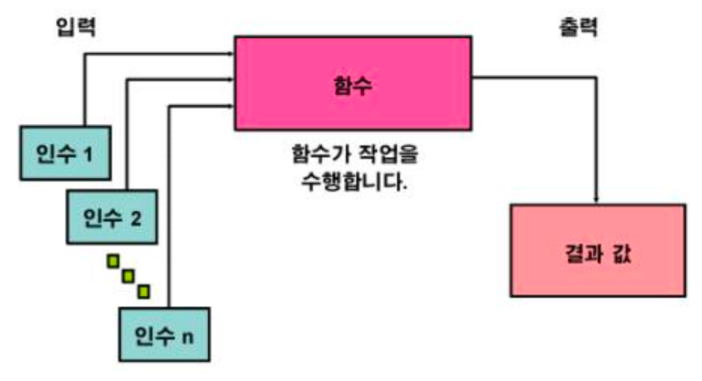
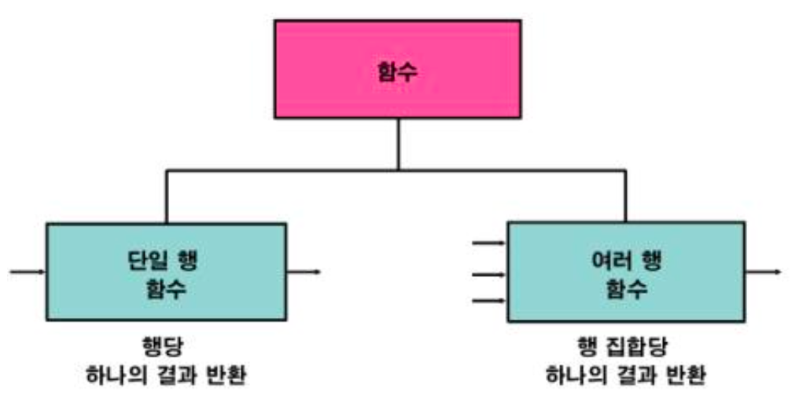
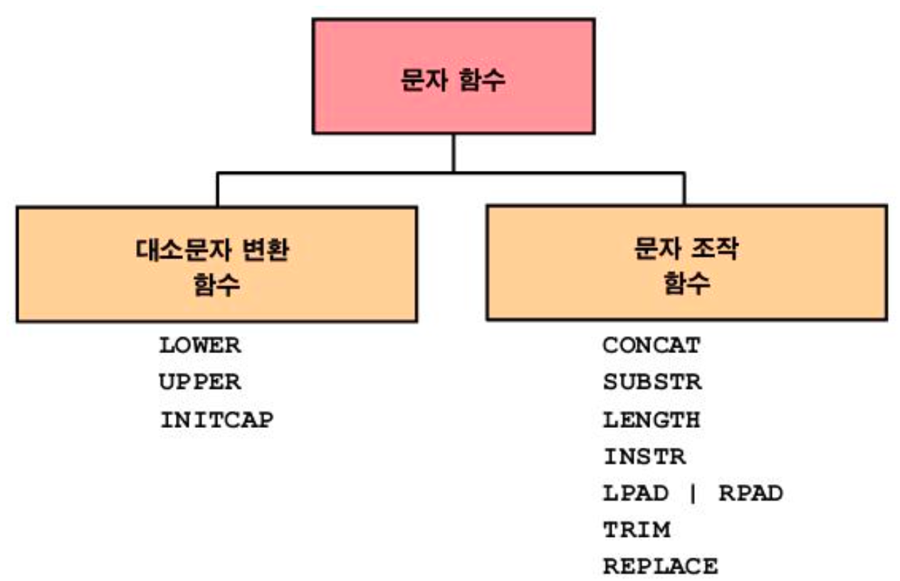
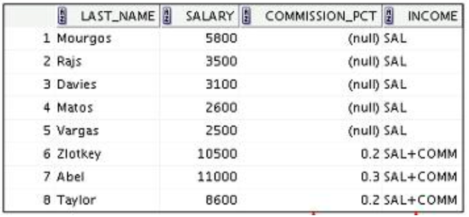
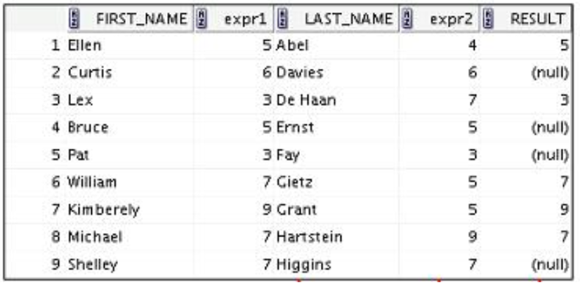

단일 행 함수
1. 함수란?

2. SQL 함수의 두가지 유형

3. 단일 행 함수

1) 문자함수
- 문자 입력을 받아 들이며 문자 및 숫자값을 모두 반환할 수 있다.

1️⃣ 대소문자 변환 함수
| 함수 | 결과 | 기능 | |
|---|---|---|---|
| LOWER(‘SQL Course’) | sql course | 모두 소문자로 변환 | |
| UPPER(‘SQL Course’) | SQL COURSE | 모두 대문자로 변환 | |
| INITCAP(‘SQL Course’) | sql Course | 단어의 첫 글자만 대문자로 변환 |
SELECT employee_id, last_name, department_id
FROM employees
WHERE LOWER(last_name) = 'higgins';

2️⃣ 문자 조작 함수
| 함수 | 결과 | 기능 | |
|---|---|---|---|
| CONCAT(‘Hello’, ‘World’) | HelloWorld | 파라미터 두개를 연결(사용 가능 파라미터는 두개로 제한) | |
| SUBSTR(‘HelloWorld’, 1, 5) | Hello | 지정된 범위의 문자열 추출 | |
| LENGTH(‘HelloWorld’) | 10 | 문자열 길이 리턴 | |
| INSTR(‘HelloWorld’, ‘W’) | 6 | 문자열에서 지정된 문자의 숫자 위치를 찾음 | |
| LPAD(salary, 10, ‘@’) | @@@@@24000 | 길이가 n이 되도록 왼쪽부터 문자식으로 채운 표현식 리턴 | |
| RPAD(salary, 10, ‘@’) | 24000@@@@@ | 길이가 n이 되도록 오른쪽부터 문자식으로 채운 표현식 리턴 | |
| REPLACE(‘JACK and JUE’, ‘J’, ‘BL’) | BLACK and BLUE | 1번 파라미터에서 2번 파리미터로 입력한 값을 3번 파라미터로 변경 | |
| TRIM(‘H’ FROM ‘HelloWorld’) | elloWorld | 문자열에서 선행문자나 후행문자를 자름 |
SELECT employee_id, CONCAT(first_name, last_name) NAME,
job_id, LENGTH(last_name),
INSTR(last_name, 'a') "Contains 'a'"
FROM employees
WHERE SUBSTR(job_id, 4) = 'REP';

2) 숫자함수
- 숫자 입력을 받아 들이고 숫자값을 반환한다.
| 함수 | 결과 | 기능 | |
|---|---|---|---|
| ROUND(45.926, 2) | 45.93 | 지정된 소수점 자릿수로 반올림 | |
| TRUNC(45.926, 2) | 45.92 | 지정된 소수점 자릿수로 버림 | |
| MOD(1600, 300) | 100 | 나눈 나머지 반환 |
🔸 DUAL 테이블
- SYS 소유
- 함수 및 계산 결과를 볼 때 사용하는 공용 테이블
- DUMMY라는 하나의 열과 값이 X인 하나의 행을 포함
- 이걸 쓰는 이유는 컬럼을 출력할 필요가 없이 어떤 값을 계산한 결과만 보고 싶어도 FROM절에 테이블명을 꼭 써야 함
- 이 때 employees 처럼 실제 데이터가 들은 테이블을 호출하면 비효율적이니까 아무것도 없는 빈 테이블을 DUAL 테이블이라 지정하고 계산 결과만 볼 때에 호출하는 것
SELECT ROUND(45.923, 2), ROUND(45.923, 0), ROUND(45.923, -1) FROM DUAL;
3) 날짜함수
- DATE 데이터 유형의 값에 대해 실행된다.
1️⃣ SYSDATE 함수
- 현재 데이터베이스 서버 날짜 및 시간을 반환하는 함수
SELECT sysdate FROM dual;
2️⃣ 날짜를 사용한 산술 연산
| 연산 | 결과 | 설명 | |
|---|---|---|---|
| 날짜 + 숫자 | 날짜 | 날짜에 일 수를 더한다. | |
| 날짜 - 숫자 | 날짜 | 날짜에서 일 수를 뺀다. | |
| 날짜 - 날짜 | 일 수 | 한 날짜를 다른 날짜에서 뺀다. | |
| 날짜 + 숫자 / 24 | 날짜 | 날짜에 시간 수를 더한다. |
SELECT last_name, (SYSDATE - hire_date) / 7 AS WEEKS
FROM employees
WHERE department_id = 90;
3️⃣ 날짜 조작 함수
| 함수 | 결과 | |
|---|---|---|
| MONTHS_BETWEEN | 두 날짜 간의 월 수 | |
| ADD_MONTHS | 날짜에 월 추가 | |
| NEXT_DAY | 지정된 날짜의 다음 날 | |
| LAST_DAY | 월의 마지막 날 | |
| ROUND | 날짜 반올림 | |
| TRUNC | 날짜 버림 |
| 함수 | 결과 | |
|---|---|---|
| MONTHS_BETWEEN(‘01-SEP-95’, ‘11-JAN-94’) | 19.6774194 | |
| ADD_MONTHS(‘31-JAN-96’, 1) | ‘29-FEB-96’ | |
| NEXT_DAY(‘01-SEP-95’, ‘FRIDAY’) | ‘08-SEP-95’ | |
| LAST_DAY(‘01-FEB-95’) | ‘28-FEB-95’ |
🔸 ROUND와 TRUNC의 활용
| 함수 | 결과 | |
|---|---|---|
| ROUND(SYSDATE, ‘MONTH’) | 01-AUG-03 | |
| ROUND(SYSDATE, ‘YEAR’) | 01-JAN-04 | |
| TRUNC(SYSDATE, ‘MONTH’) | 01-JUL-03 | |
| TRUNC(SYSDATE, ‘YEAR’) | 01-JAN-03 |
4) 변환함수

- 값의 데이터유형을 변환한다.
1️⃣ TO_CHAR 함수(DATE ➡️ CHAR)
🔸 문법
TO_CHAR(date, 'format_model')
🔸 날짜 형식 요소
| 요소 | 결과 | |
|---|---|---|
| YYYY | 숫자로 된 전체 연도 | |
| YEAR | 영어 철자로 표기된 연도 | |
| MM | 월의 2자리 값 | |
| MONTH | 전체 월 이름 | |
| MON | 월의 3자 약어 | |
| DY | 3문자로 된 요일 약어 | |
| DAY | 요일의 전체 이름 | |
| DD | 숫자 형식의 월간 일 |
-
시간 요소는 날짜에서 시간 부분의 형식을 지정한다.
HH24:MI:SS AM ➡️ 15:45:32 PM -
문자열은 큰 따옴표로 묶어 추가한다.
DD “of” MONTH ➡️ 12 of OCTOBER - 숫자 접미어는 숫자를 영어 철자로 표기한다.
ddspth ➡️ fourtheenth - sp라 쓰면 약간 잘라서 약자로 표현함
2️⃣ TO_CHAR 함수(NUMBER ➡️ CHAR)
🔸 문법
TO_CHAR(number, 'format_model')
🔸 숫자 형식 요소
| 요소 | 결과 | |
|---|---|---|
| 9 | 숫자를 나타냄(0 ~ 9) | |
| 0 | 0이 표시되도록 강제 적용(0만 표시됨) | |
| $ | 부동 달러 기호 배치 | |
| L | 부동 로컬 통화 기호 사용 | |
| . | 소수점 출력 | |
| , | 천단위 표시자로 쉼표 출력 |
SELECT TO_CHAR(salary, '$99,999.00') SALARY
FROM employees
WHERE last_name = 'Ernst';
- TO_CHAR(salary, ‘$99,999.00’) 에서 ‘$99,999.00’를 통해 출력할 수 있는 자리수는 최대 6자리이다.
- 만약 자리수를 초과하면 ####으로 출력되고 숫자 자체가 출력되지 않는다. => 그러니까 자리수를 넉넉히 쓰자
3️⃣ TO_NUMBER 함수(CHAR ➡️ NUMBER)
🔸 문법
TO_NUMBER(char[, 'format_model'])
- 문자를 숫자로 바꿔주는 함수인데 쓸 일이 거의 없다.
- salary 같은 컬럼을 $3,000이라 저장하면 조회할 때 보기에는 편하지만 필드값을 계산에 사용하려고 하면 $가 없는 숫자로 바꿔줘야 해서 번거롭다.
- 그래서 보통 3000 숫자 자체만 저장해놓기 때문에 TO_NUMBER 함수를 쓸 일이 없다.
4️⃣ TO_DATE 함수(CHAR ➡️ DATE)
🔸 문법
TO_DATE(char[, 'format_model'])
- 내가 원하는대로 날짜값을 출력해주는 함수
SELECT employee_id, last_name, salary, hire_date FROM employees WHERE hire_date < to_date('2004/08/09', 'YYYY/MM/DD');
5) 일반함수
- 모든 데이터타입에 사용가능하다.
| 함수 | |
|---|---|
| NVL(expr1, expr2) | |
| NVL2(expr1, expr2, expr3) | |
| NULLIF(expr1, expr2) | |
| COALESCE(expr1, expr2, …, exprn) |
1️⃣ NVL 함수
- null 값을 실제 값으로 변환
- 사용할 수 있는 데이터 유형은 날짜, 문자 및 숫자
- 데이터 유형이 일치해야 함
- NVL(commission_pct, 0)
- NVL(hire_date, ‘01-JAN-97’)
- NVL(job_id, ‘No Job Yet’)
- 산술식에 null이 들어가면 결과값은 null이다.
SELECT last_name, salary, NVL(commission_pct, 0), (salary*12) + (salary*12*NVL(commission_pct, 0)) AN_SAL FROM employees;
2️⃣ NVL2 함수
- 첫번째 표현식을 검사해서 null이 아니면 두번째 표현식을 반환하고 또 null이면 세번째 반환
SELECT last_name, salary, commission_pct, NVL2(commission_pct, 'SAL+COMM', 'SAL') income FROM employees WHERE department_id IN (50, 80);
3️⃣ NULLIF 함수
- expr1과 expr2를 비교해서 두 표현식이 같으면 null을 반환하고 두 표현식이 다르면 expr1 반환
SELECT first_name, LENGTH(first_name) "expr1", last_name, LENGTH(last_name) "expr2", NULLIF(LENGTH(first_name), LENGTH(last_name)) result FROM employees;
4️⃣ COALESCE 함수
- NVL 함수보다 여러 대체값을 가질 수 있음
- null이 아닌 첫번째 표현식 반환
- 파라미터들의 자료형이 모두 같아야 한다.
SELECT last_name, employee_id, COALESCE(TO_CHAR(commission_pct), TO_CHAR(manager_id), 'No commission and no manager') FROM employees;